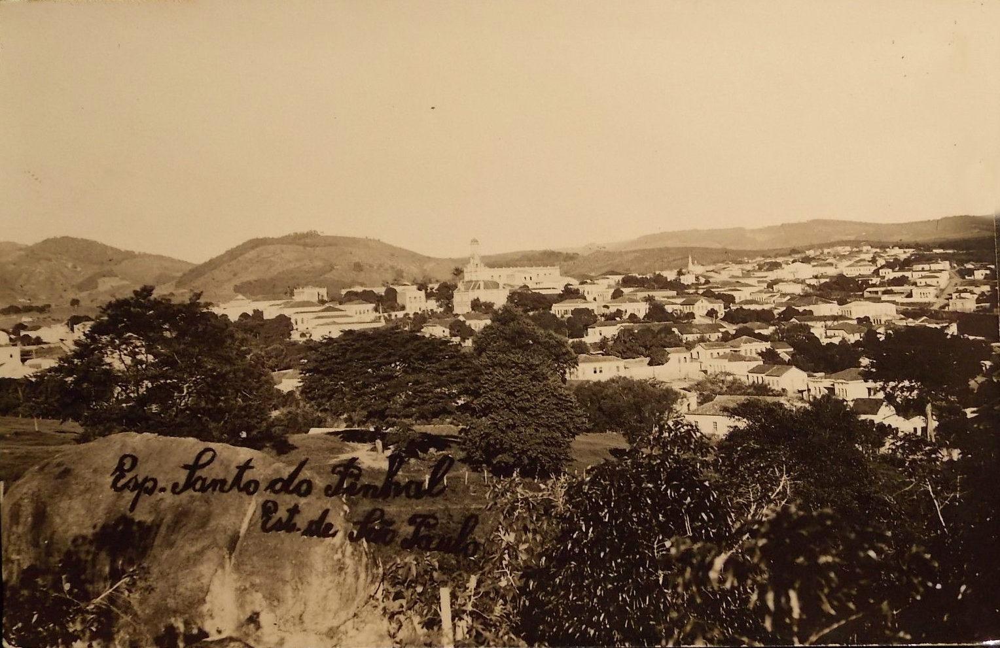

Como na maior parte do país, o Espírito Santo possui um grande histórico de escravidão envolvendo atividades agrícolas, principalmente café. Durante o período de 1890 a 1930, a região viveu um período denominado de “Ciclo do Café”, na qual o café se tornou o seu principal produto de exportação, consequentemente alavancando a economia local. Também durante esse período ocorreu a greve dos cafeicultores, em 1909, que consequentemente resultou em uma melhoria nas condições de trabalho. Ainda nos dias de hoje existem casos de escravidão registrados nas fazendas localizadas no interior do estado

O perfil sócio-cultural dos trabalhadores resgatados da escravidão no estado do Espírito Santo revela uma série de características relevantes que merecem destaque. Em primeiro lugar, é importante destacar que a grande maioria desses trabalhadores é composta por homens de raça parda, com idade entre 25 e 50 anos.
Além disso, em termos de escolaridade, observa-se uma realidade preocupante, uma vez que apenas 14% dos trabalhadores resgatados possuem ensino fundamental completo, enquanto 25% possuem escolaridade até o nível fundamental, mas com até o 5º ano incompleto. Além disso, o índice de analfabetismo entre esses trabalhadores chega a 14%, o que é alarmante.
No que se refere à naturalidade, a maioria dos trabalhadores resgatados da escravidão no estado do Espírito Santo é natural do próprio estado, o que indica que a situação de exploração e trabalho escravo não é algo que afeta apenas migrantes ou pessoas vindas de outras regiões do país. Em resumo, o perfil sócio-cultural dos trabalhadores resgatados da escravidão no estado do Espírito Santo revela uma realidade preocupante, marcada por baixos níveis de escolaridade e uma predominância masculina entre os trabalhadores resgatados. Essa situação demanda ações efetivas do